用户动机
用户在年会场景中更愿意参与低成本、强反馈、可炫耀的互动。纪念票需要兼具身份感、活动氛围和可分享属性。
2025 · 智能图像生成 · 活动体验
这是一个围绕年会场景的智能图像生成项目：用户从活动入口进入，选择纪念票主题与模板，上传个人图片，由智能生成专属纪念票，并完成内容发布与分享。
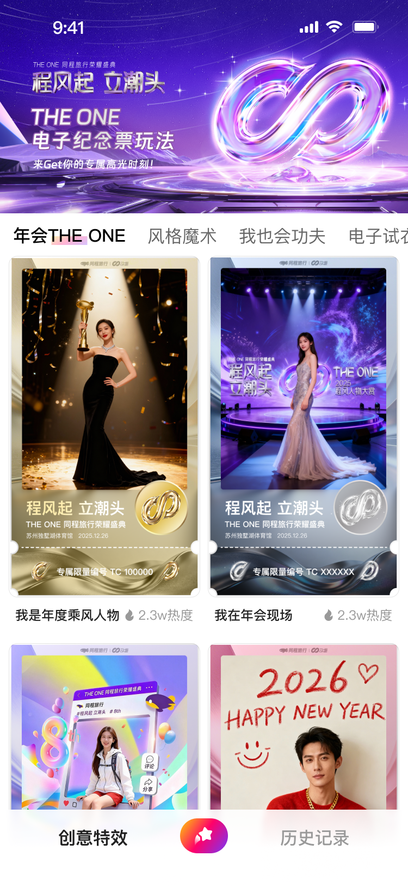
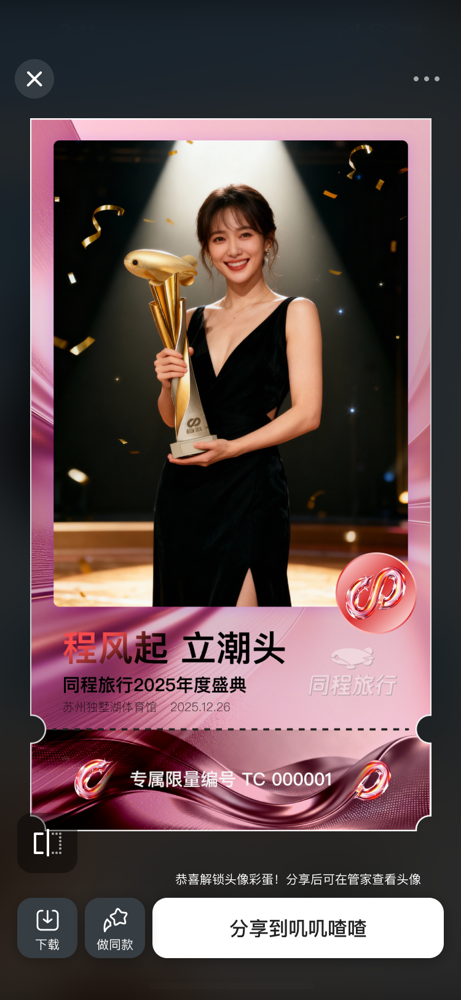
设计挑战
智能图像生成在活动场景里不能只是一个工具入口，它需要和用户的参与情绪绑定：用户为什么要上传照片、为什么要选择模板、生成结果如何体现“我参加过这场年会”。
因此项目逻辑被设计成一个短链路闭环：活动吸引、主题理解、模板选择、上传预览、生成纪念票、发布分享。每一步都需要清楚告诉用户下一步会发生什么。
调研到设计
用户在年会场景中更愿意参与低成本、强反馈、可炫耀的互动。纪念票需要兼具身份感、活动氛围和可分享属性。
智能生成链路需要让用户知道图片会被如何使用。上传、预览、模板选择和生成结果之间要有足够明确的状态反馈。
生成结果不应停留在保存，而要继续引导发布内容、分享成功和二次传播，让活动热度从个人结果延展到社交触达。
系统框架
页面设计
入口页和活动页需要先解释“这是一次年会纪念票活动”，并用视觉主题和生成结果暗示激发用户尝试。
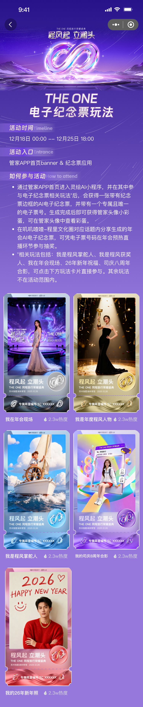
五款电子纪念票共同建立活动主视觉：不同配色对应不同氛围与身份感，让用户在进入模板选择前，先感知结果物的收藏价值和分享吸引力。
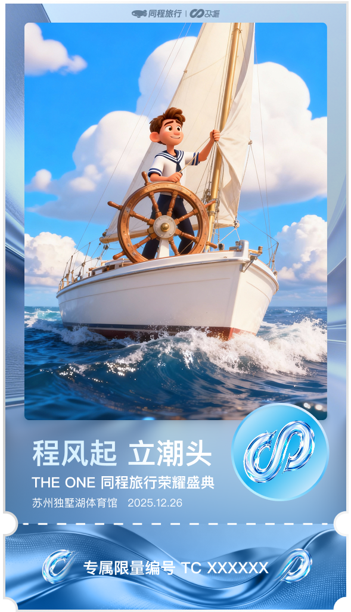
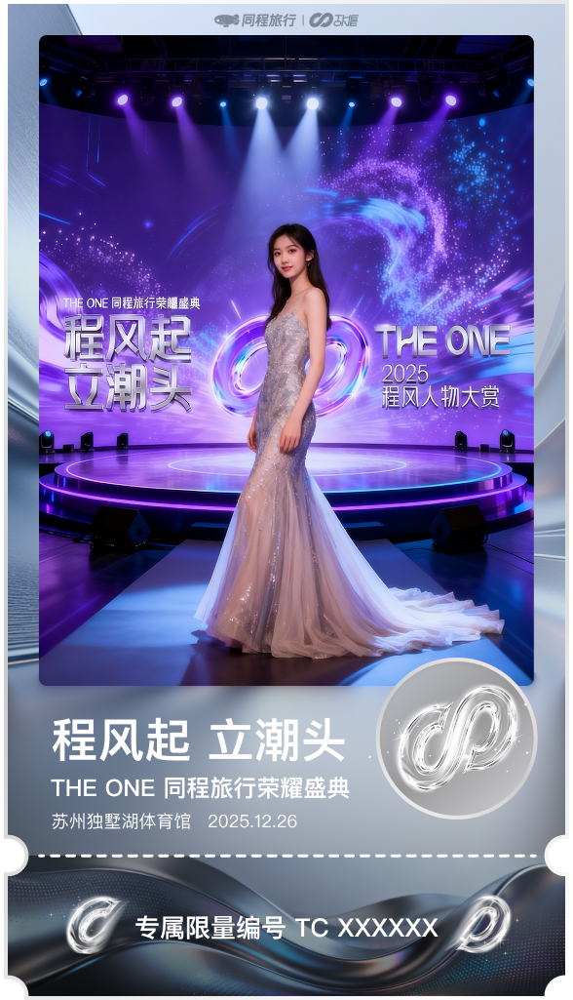
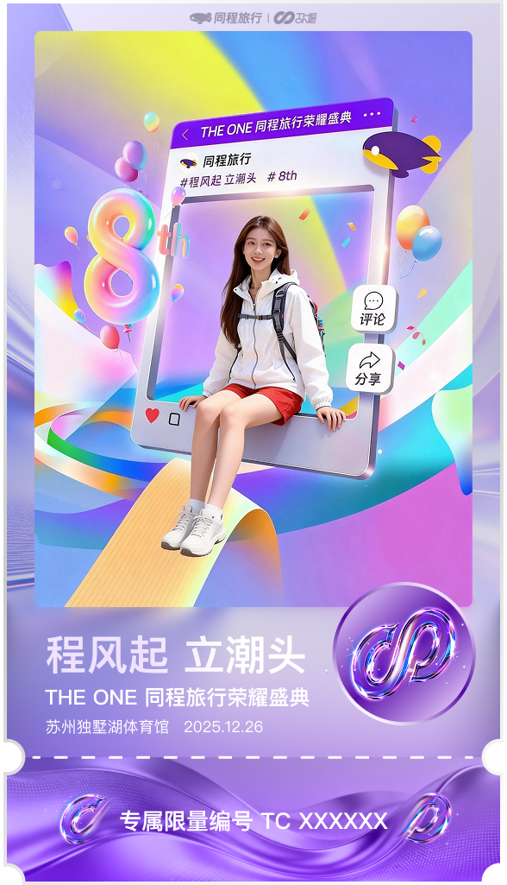
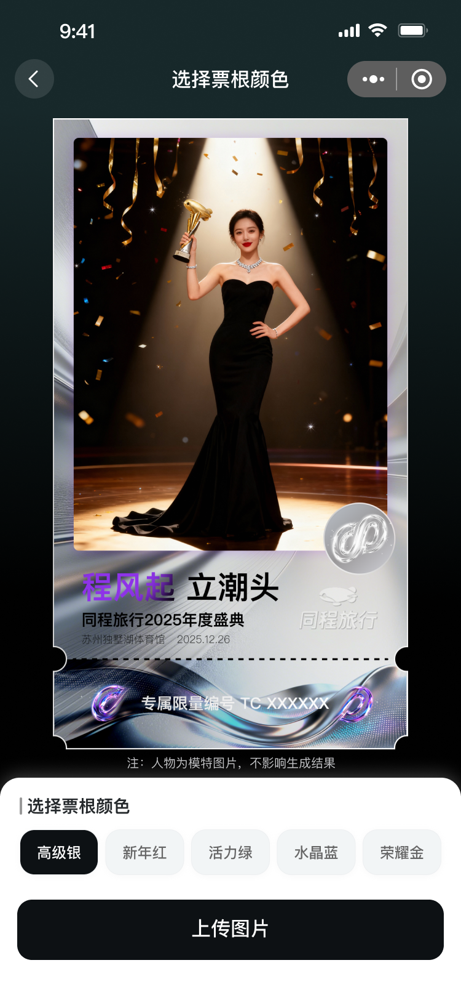
上传图片、预览确认和生成结果构成核心智能任务链路。每一步都需要明确当前状态，让用户知道图片已被接收、正在生成，并最终得到可保存的纪念票。
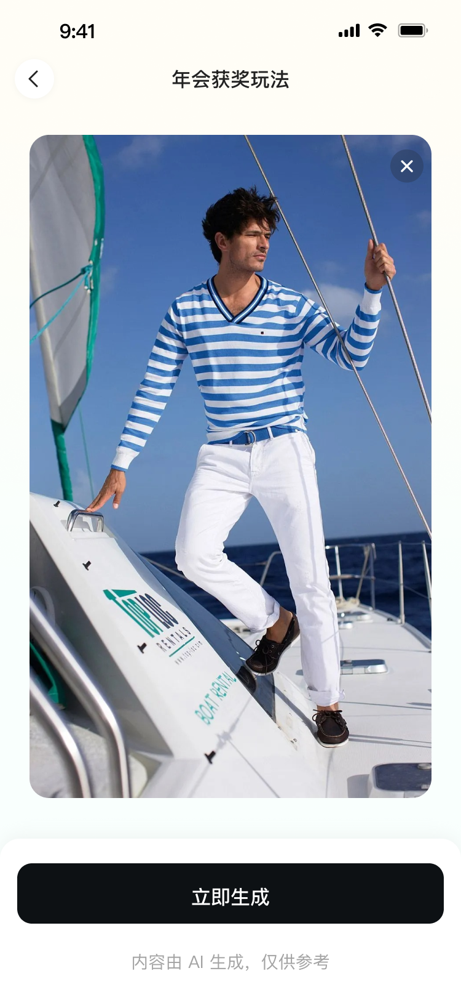
生成后的页面继续引导用户发布内容与分享成功，将个人纪念票转化为可传播素材，让年会活动在社交链路中继续扩散。
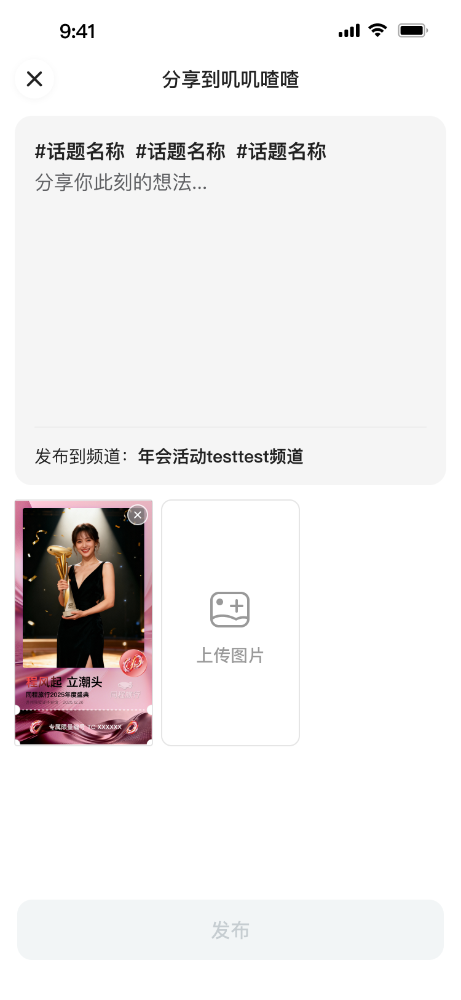
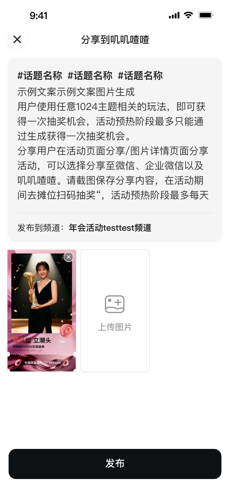
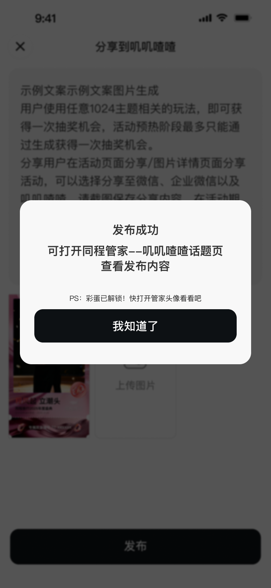
交互逻辑
减少用户决策负担，避免过多参数配置，用模板和主题快速建立方向。
通过上传预览和生成结果确认，降低智能生成过程中的不确定感。
把纪念票设计成适合发布和转发的结果物，让个人参与转化为活动传播。